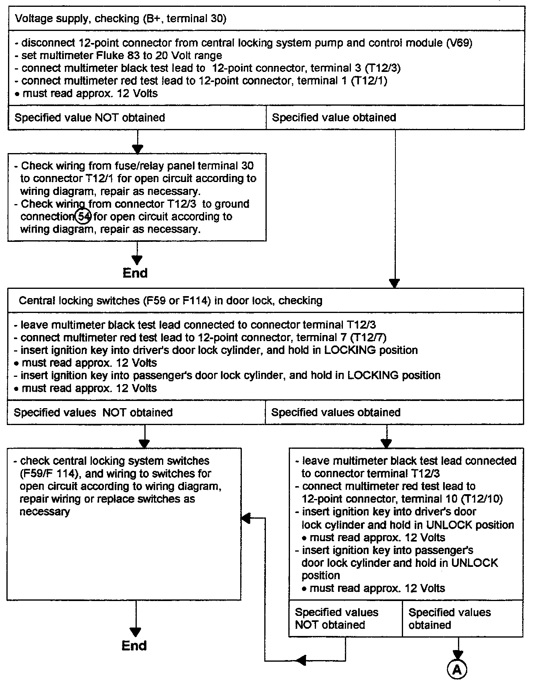
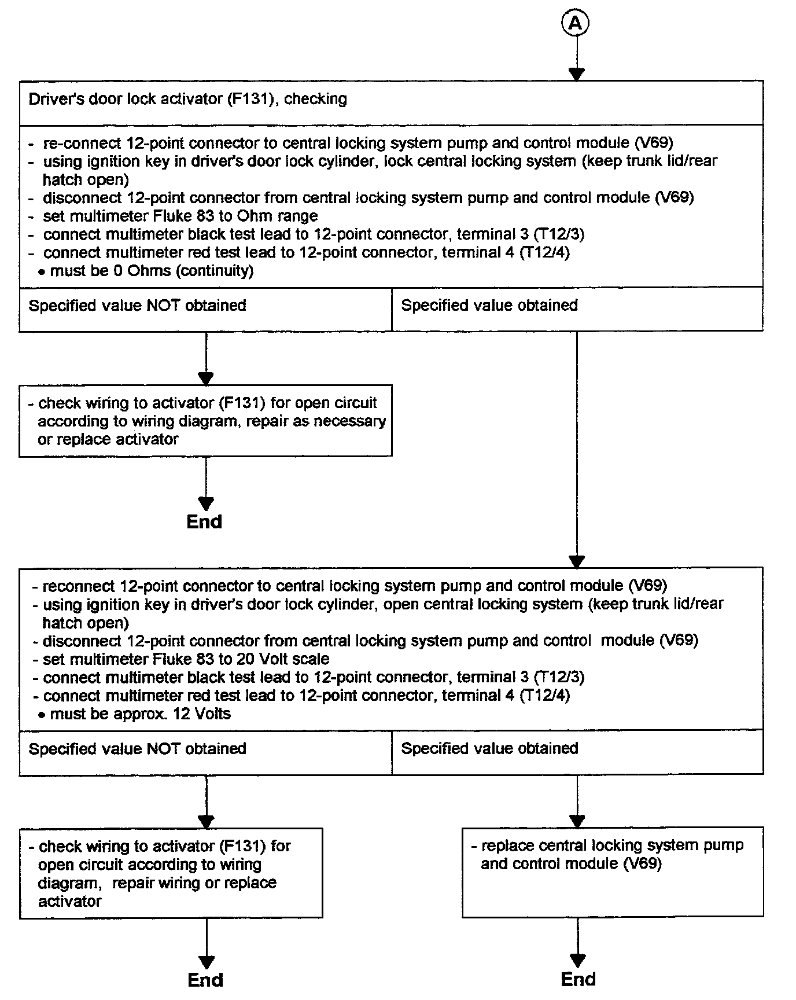

Checking Central Locking System


Tools required:
- Digital multimeter Fluke 83 (US 1119)
Caution: DO NOT damage, enlarge or bend connector terminals or cavities by forcing probes into them when performing electrical checks. Use Connector Test Kit VW 1594 to make the necessary electrical connections.
- Connector Test Kit VW 1594
- Applicable wiring diagram
Test conditions:
- Battery Ok
- Fuse S16 OK
- Fuse S21 OK
- Vacuum system OK
NOTE: If one or more locks do not open or close, check if the vacuum pump remains on longer than 5 seconds, then pumps again after a short time. If so, a leak exists in the vacuum system which must be eliminated prior to troubleshooting.